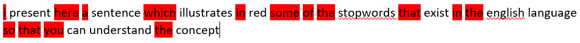

Tidytext, stopwords, and sentiment analysis
Last updated on 2024-05-29 | Edit this page
Estimated time: 0 minutes
Overview
Questions
- “How do we prepare text for analysis and measure the sentiment of the text?”
Objectives
- “Using specific packages to perform text preparation and sentiment analysis”
Loading our libraries and reading our data
Let us now load our libraries
R
library(tidyverse)
library(tidytext)
library(tm)
Understanding our data
We have now successfully loaded in our dataset. Before we start preparing it for analysis, let us inspect the columns to see what the dataset contains
R
head(kina)
OUTPUT
# A tibble: 6 × 19
ID Date `Start time` `End time` Time `Agenda item` `Case no`
<chr> <date> <time> <time> <dbl> <chr> <dbl>
1 201001121437… 2010-01-12 14:37:05 14:37:25 20 2010-01-12-7 61
2 201001121437… 2010-01-12 14:37:25 14:47:59 634 2010-01-12-7 61
3 201001121447… 2010-01-12 14:47:59 14:48:05 6 2010-01-12-7 61
4 201001121448… 2010-01-12 14:48:05 14:49:01 56 2010-01-12-7 61
5 201001121449… 2010-01-12 14:49:01 14:49:03 2 2010-01-12-7 61
6 201001121449… 2010-01-12 14:49:03 14:49:47 44 2010-01-12-7 61
# ℹ 12 more variables: `Case type` <chr>, `Agenda title` <chr>,
# `Subject 1` <chr>, `Subject 2` <chr>, Name <chr>, Gender <chr>,
# Party <chr>, Role <chr>, Title <chr>, Birth <date>, Age <dbl>, Text <chr>We see that we have a lot of metadata, including the date of the
speech, the start and end time of the speech, the discussed
resolutions/law proposals and their classifications into subjects, as
well as various personal information about the speaker. The last column
is called Text and this contains the speech itself
Introduction to tidytext and tokenization
To analyze the speeches we need to make the text tidy. Tidy text refers to a dataset where each text has been split up into the individual words that make up the speech, and in format where each row contains one word.
Splitting texts, in our case speeches, into individual words is
called tokenization  Hvitfeldt & Silge,
2021
Hvitfeldt & Silge,
2021
Tokenization of text into individual words is necessary for text mining because it allows us to analyze the text closely and in detail, analyses which can later be visualized to understand the patterns of the text. Tokenization is language independent, as long as the language is written in an alphabet or syllabary that uses spaces between words. When tokenizing our text to make it tidy, the metadata that describe the whole speech are carried over to also describe the individual word. Thus we can split the text into individual words but still keep track of who said that word and when they did.
We use the tidytext library for tokenization
R
kina_tidy <- kina %>%
unnest_tokens(word, Text) #tidytext tokenization
Stopwords
In all natural language texts, frequent words that carry little meaning by themselves are distributed all across the text 
The frequent low-meaning words need to be removed because they do not add anything to our understanding of the texts and are just noise
The tm library contains a list of stopwords for Danish, which we’ll make into a tibble. We have to specify that the list of stopwords that we want to call is the list for the Danish language. Note that stopword lists are also available for most major European languages
R
stopwords_dansk <- tibble(word = stopwords(kind = "danish"))
Sentiment analysis
Sentiment analysis is a method for measuring the sentiment of a text. To do this, it is necessary to have a list of words that have been assigned to a certain sentiment. This can be a simple assignation of words into positive and negative, it can be an assignation to one among a multitude of categories, and the word can have a value on a scale. In this course we will use the AFINN index for Danish, which assigns approximately 3500 words on a scale from +5 to -5. This will enable us to calculate and compare the overall sentiment of the various speeches. As a side note, AFINN index is also available in English.
We need to download the AFINN Index from GitHub
R
download.file("https://raw.githubusercontent.com/KUBDatalab/R-textmining/main/data/AFINN_dansk.csv", "data/AFINN_dansk.csv", mode = "wb")
Now we read need to read the AFINN Index into a tibble and rename the columns
R
AFINN_dansk <- read_csv("data/AFINN_dansk.csv")
Bringing it all together: joins
We have now created tibbles, each with the words appropriate for removal of stopwords and application of sentiment analysis respectively. Now we need to bring them together in the correct order, and we do this by using join-functions. The join functions from the tidyverse library allow tibbles to be joined together based on columns that have cells where the content is the same in both tibbles.
There are fundamentally 2 types of joins: * Mutating joins (which add columns) * Filtering joins (which filter away rows)
Mutating joins work by adding new columns to the tibble. We will use left_join, which is the most common of the mutating joins The left_join joins all AFINN sentiment values to those rows that contain a word that is in the AFINN Index and adds it as a new column to the tibble. In the new column, the rows that contain words that don’t appear in the AFINN Index have NA in their cell
Filtering joins work by filtering away some rows in the tibble. We
will use the anti_join, which removes those rows that contain a word
that is also in the stopword list 
For more info on joins see R for Data Science section section 13: Relational data
We will use the anti_join first, beause we need to filter away stopwords before we analyse the text with sentiment analysis
R
kina_tidy_2 <- kina_tidy %>%
anti_join(stopwords_dansk, by = "word") %>% #stopwords in Danish
left_join(AFINN_dansk, by = "word") #left join with AFINN Index in Danish
Analyzing the sentiment of parties
We would like to measure the sentiment of each party when giving speeches on the topic of China
First we need to calculate the mean sentiment value for each party. We save it as an object so that we can easily recall it for visualization
R
kina_sentiment_value <- kina_tidy_2 %>%
filter(Role != "formand") %>%
group_by(Party) %>%
summarize(
mean_sentiment_value = mean(sentiment_value, na.rm=TRUE)
)
Now we want to visualize each party’s mean sentiment value according to the AFINN-Index
R
kina_sentiment_value %>%
ggplot(aes(x = Party, y = mean_sentiment_value, fill = Party)) +
geom_col() +
labs(x= "Party")
Analyzing the sentiment of rød and blå blok
We would also like to analyze the sentiment of rød and blå blok as a whole respectively. To do this, we need to add a column to each row that specifies whether the word comes from a member of a party in rød blok or blå blok. We must therefore first define which parties make up rød and blå blok and put that in a tibble, then bind the two tibbles into one tibble, and then make a left_join to the rows in our tidy text
R
roed_blok <- tibble(Party = c("ALT", "EL", "SF", "S", "RV"), Blok = c("roed_blok"))
blaa_blok <- tibble(Party = c("V", "KF", "LA", "DF"), Blok = c("blaa_blok"))
blok <- bind_rows(roed_blok, blaa_blok)
kina_tidy_blokke <- kina_sentiment_value %>%
left_join(blok, by = "Party")
Now we would like to do the same analysis of mean sentiment value, this time for each blok. We also want to specify that the column for roed_bloek should be red and the column for blaa_blok should be blue
R
kina_blokke_sentiment_value <- kina_tidy_blokke %>%
group_by(Blok) %>%
summarize(
mean_sentiment_value = mean(mean_sentiment_value, na.rm=TRUE)
)
R
kina_blokke_sentiment_value %>%
ggplot(aes(x = Blok, y = mean_sentiment_value, fill = Blok)) +
geom_col() +
scale_fill_manual(values = c("blue", "red")) +
labs(x= "Blok")